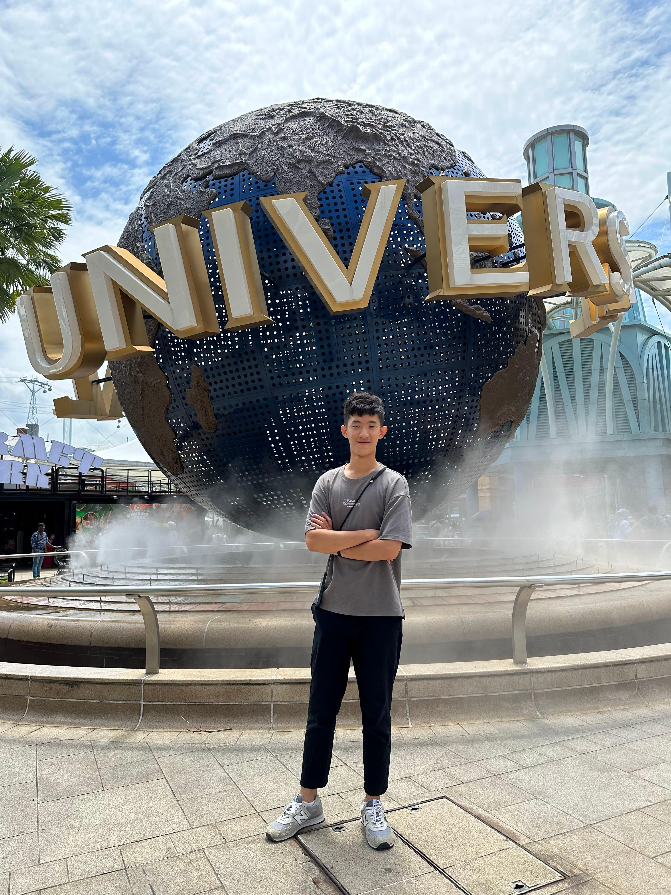

工作經驗 Work Experience
您好，我叫邱祥育來自彰化的一個小村落，在一個純樸的鄉下長大，因此從小便養成了遇到問題時會先想辦法自行解決的習慣，當遇到不會的事情時會很想要趕快地去把這方面的知識學習起來。 在高中的時候擔任吉他社的社長，與其他幹部一同成功的將草創的社團走出校園到社會上展演。大學時，擔任逢甲大學資訊處維修室的維修工讀生，協助負責全校電腦軟硬體的維修並維持了三年半的工讀時間，在維修室工讀的期間受到逢甲大學推廣教育中心的賞識至其單位擔任電腦教室維護人員，負責其單位旗下所有電腦教室保養及維護同時擔任該單位與學校資訊處溝通的橋樑，並在其餘時間協助該單位進行開班等事項。碩士就讀期間，在台北科技大學機電學院副院長陳金聖教授與機械工程系李仕宇副教授的共同指導下，參與科技部計畫並且擔任子計畫二負責人，過程中協助網路部分通過國際資安認證IEC62443 2-4認證，為目前台灣少數通過認證的團隊之一
團隊合作經驗 Team Work Experience
- 科技部發展結合物聯雲霧計算平台與異質生產設備之智慧化資安技術暨攻防演練場域驗證-子計畫二負責人
- 國立台北科技大學AI數位轉型研發中心網路長
- 逢甲大學推廣教育中心電腦教室維護人員
- 逢甲大學資訊處維修室維修工讀生
- 彰化成功高級中學第三屆吉他社社長